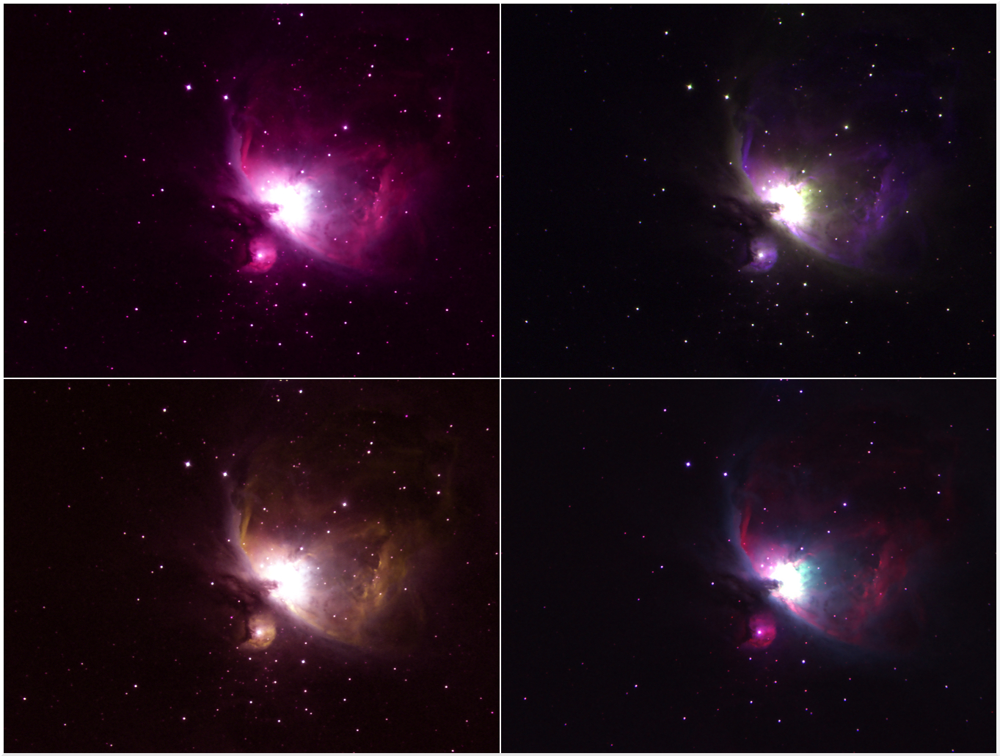

Hello! You have arrived at the website of Andrew Couperus, me! I am an observational astronomer and graduate student in the astronomy PhD program at the Georgia State University Department of Physics and Astronomy. I work with Dr. Todd Henry and the REsearch Consortium On Nearby Stars (RECONS; www.recons.org) studying low-mass stars in the solar neighborhood. My work primarily investigates the long-term variability and stellar activity of nearby M dwarf stars, but I love time series data in general too! I am in the later stages of my PhD and will be defending in mid-2025.
I also have a strong interest in the intersection of astronomy and climate change education and outreach. These might seem like disjointed topics, but there is actually significant overlap between the fields of astronomy and climate science. In fact, there are many reasons why astronomers in particular are very well positioned to teach and talk about climate change topics. Check out the Astronomers for Planet Earth (A4E) group here if you want to learn more. One of my main activities in this area in recent years has been serving on the American Astronomical Society (AAS) Task Force for Green Astronomy, a group charged with identifying ways for the AAS to reduce its emissions in line with the Paris Climate Agreement. Our work recently concluded and a copy of our report to the AAS can be accessed on arXiv here. Please reach out if you're curious to hear more - I'm always looking to make new connections in this interdisciplinary space!
I am leading two primary projects in my PhD thesis work. Both target low-mass M dwarfs, which account for roughly three-quarters of all stars in the local Universe. These tiny red stars are leading candidates for detecting and characterizing exoplanets in the habitable zone using modern techniques. However, the stars themselves can be quite unwieldy, hosting very strong magnetic activity that can produce massive eruptions and harmful high-energy radiation that could both prove disastrous for any potential life orbiting these stars. It is therefore critical to understand how and why these stars behave the way they do in the hopes of determining which may ultimately be good or bad candidates for hosting habitable worlds. Both of my projects seek to do this by examining different aspects of how the stellar activity behaves and changes in time.
The first project is a comprehensive endeavor to investigate long-term stellar activity cycles in nearby M dwarfs using more than two decades of stellar brightness measurements obtained by RECONS. These data are collected with regular observations as part of a long-term effort using the Small and Moderate Aperture Research Telescope System (SMARTS) 0.9m telescope at the Cerro Tololo Inter-American Observatory (CTIO) in Chile. The volume-complete sample being used in this effort consists of roughly 455 M dwarfs within 16.7 parsecs in the southern sky, with a median coverage of approximately 10 years per star. My efforts have thus far yielded one of the largest collections of stellar activity cycles in fully convective M dwarfs (N=50-ish), with corresponding cycle period measurements available in many cases (N=20-ish). We have also probed new territory in these results by finding cycles with periods and variations lasting beyond 20 years, nearly twice as long as the 11-year activity cycle on the Sun. These results will be published in a forthcoming paper that is under preparation.
My second project examines a sample of 36 M dwarf wide binaries with nearly identical components in each pair. These ‘twin’ binaries are comprised of stars with similar masses, ages, and compositions based on (a) astrometry confirming that they are part of the same, presumably coeval system, and (b) optical/infrared photometry from 0.5-2.2 µm that match within 0.1 mag. The fundamental goal for the project is to assess if these twin stars display similar or radically different activity behaviors, which will inform and constrain how well we can predict the overall evolution of this activity across stellar lifetimes. These binaries have been studied with a breadth of new observational programs, including short- and long-baseline optical photometry targeting rotation rates and stellar cycles respectively, optical spectroscopy studying H-alpha chromospheric activity and radial velocity behaviors, X-ray imaging to investigate X-ray coronal properties of the stars, and high-resolution speckle imaging to help rule out possible additional companions that might invalidate the assumed twin nature of the stars. Our results have uncovered notable differences in the activity behaviors between components for several systems, refining our understanding of what is possible in M dwarf activity evolution. On the flip side, many other systems show remarkable agreement in their various measurements, supporting the possiblity for predictable magnetic activity. Science has, as it often does, produced more questions than answers in this case! These results will be published in a two-part paper series that is in preparation.
A few example Figures are given below to highlight aspects of both projects. A recent poster from the Cool Stars 22 conference highlighting results from the twins project can also be accessed here. A slightly older poster including work from both projects can be accessed here.
Figure 1 - An H-R diagram of the RECONS volume complete M dwarf sample I am studying, which spans the entire M dwarf spectral range and is comprised of color-coded subgroups that divide the different mass regimes. The number of objects in the sample totals 455 (as of plot creation). A black dashed line has been added at MV = 11.33, which corresponds to the 0.35 solar mass transition between partially and fully convective stars, based on the mass-luminosity relation of Benedict et al. (2016). The sample is dominated by mid and late M dwarfs, which have been critically understudied to date in regards to stellar activity cycles.
Figure 2 - Example results for the prominent stellar cycle found in WT 460 AB, a nearby M dwarf system observed as part of RECONS efforts. The differential photometry light curve is shown, where 0 is defined as the mean of all the points. The grey number on the top right is the average noise of the calibrator reference stars, shown visually as the grey shaded region spanning above and below 0. The y-axis is inverted, so that the stellar brightness increases moving upward on the plot. Points are the average and standard deviation of the typically 5 frames taken in a single observational visit, with open circles representing low-quality visits that only acquired a single frame. Brightness variations spanning beyond two decades are plainly evident.
Figure 3 - An observational H-R diagram using Gaia DR3 absolute G magnitudes and BP-RP color. Large black circles represent the 36 systems in the twin M dwarf binary sample, with components in each binary connected by a red line. Under plotted in grey is a partly cleaned sample of Gaia sources showing the main sequence for comparison. A diagonal cyan line represents the gap marking the transition between partially and fully convective M dwarfs as discovered in Jao et al. (2018). The sample includes binaries spanning the range from partially convective early-type M dwarfs to mid and late M dwarfs that are fully convective.
Figure 4 - High-resolution spectra of the H-alpha line region --- shifted to zero RV and continuum normalized --- stacked for multiple epochs to visually compare the resolved A and B components in two twin M dwarf binary systems. This only includes non-flaring epochs with both stars successfully observed back-to-back; the legends indicate the number of epochs shown and the timespan of those spectra. One system shows sustained differences in the level of H-alpha activity while the other system shows consistent agreement between the two stars. The spectra also demonstrate a remarkable overlap in continuum 'wiggles' between components in each system. The spectrum for a given star and epoch was RV shifted and continuum normalized in isolation, i.e., the analysis gave no consideration to the RV or spectral behavior at other epochs or in the other component. This means the overlap in continuum features is truly astrophysical and consistent over many visits, validating and underscoring the twin-like natures of the pairs.
Interests
Running, meditation, climate change, metal song covers, cooking, fun facts, all things science and science communication.
Fantasy Novels - Favorites include: Kingkiller Chronicles, Stormlight Archive (and everything Brandon Sanderson), Riyria Chronicles
PC Gaming - Favorites include: Elden Ring, Breath of the Wild, Skyrim, Don't Starve
Fun Images and Plots

Four false-color composite images of the Orion Nebula, made using multi-filter images I acquired with the Reynolds Observatory at Clarkson University in Potsdam, NY.
The semi-major axis versus inclination for the known moons of Jupiter (Fall 2018). Made using data from the JPL Small-Body Database and Scott Sheppard at the Carnegie Institution for Science.
The semi-major axis versus inclination for the known moons of Saturn (Fall 2018). Made using data from the JPL Small-Body Database and Scott Sheppard at the Carnegie Institution for Science.